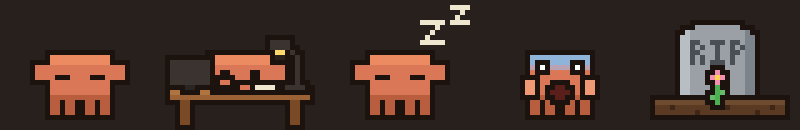

Always visible
A tiny mouse icon and the battery percentage, right next to your tray.
TrayMouse puts a tiny mouse icon and the battery percentage next to your system tray. No vendor software, no tray clutter, no surprises when your mouse dies mid-game.
npx traymouseNeeds Node.js. Run it again and nothing happens, so you never get two.
Grab it from the latest release and double-click. That's it.
~450 KB .exe · ~12 MB RAM · nothing to install
One Rust .exe that reads the battery straight from your receiver, and does nothing else.
Figures from the project README. Each bar shows its own scale.
It looks like a native tray icon, follows the edge of the tray and stays out of your way.
A tiny mouse icon and the battery percentage, right next to your tray.
Right-click → Mouse color… Reset color brings back the default lavender.
Below 25% the mouse and the number turn red, even if you picked a red mouse.
Plug in the cable and you get a bolt plus the current level.
A red ✕ when the receiver is unplugged or the mouse is off. Checked every 5 seconds.
Hides automatically over fullscreen games and videos.
One ~450 KB .exe, about 12 MB of RAM, nothing to install. Written in Rust.
No network code: no telemetry, no analytics, no update checks, no accounts.
Reads the battery straight from the receiver. LAMZU, Logitech and Razer.
Five states cover everything your mouse can tell you.
The percentage in white, next to the tray.
Mouse and number turn red.
Receiver unplugged or mouse off.
Right-click → Mouse color…
A bolt plus the current level.

Tested mice have been confirmed on real hardware. Untested ones are built from proven open-source protocol work and are waiting for a first report.
| Mouse | Status | How the battery is read |
|---|---|---|
| LAMZU Maya X8K dongle | Tested | The same request LAMZU's official web driver (lamzu.net) sends to the dongle. |
| Logitech G Pro Wireless | Testedreceiver and cable | Logitech's HID++ 2.0 protocol, battery voltage feature (0x1001), converted to a percentage. |
| Logitech G Pro X Superlight | Untested | Same protocol and battery feature as the G Pro Wireless, so it's very likely to work. |
| Logitech G Pro X Superlight 2 | Untested | HID++ 2.0 unified battery feature (0x1004), which reports a percentage directly. |
| Razer Viper V3 Pro | Untested | Razer's control protocol (battery 07 80, charging 07 84), wired or HyperSpeed dongle. |
| Razer DeathAdder V3 Pro | Untested | Same as the Viper V3 Pro. |
How the untested mice were added. They were written from the protocol work of Solaar (Logitech) and OpenRazer (Razer). Device IDs, commands and checksums come from their drivers, so they're not guesses, but nobody has run them on that exact mouse yet. Own one? Tell me whether it works: one quick report moves it to Tested.
Other Logitech mice on a Lightspeed receiver will often work too, since they speak the same protocol. If several supported mice are connected, TrayMouse shows the first one that's switched on.
Two ways in. Neither needs an installer.
Grab traymouse.exe from the latest release and run it. That's it.
If you have Node.js, this puts it on your taskbar (npm package):
npx traymouseRunning it again while it's already up does nothing, so you never get two. For the newest version run npx traymouse@latest.
SmartScreen warning? The app isn't code-signed (signing costs money), so Windows may warn you. Click More info → Run anyway, or build it yourself from source.
%APPDATA%\TrayMouse.shell:startup, and put a shortcut to traymouse.exe in that folder (or a .cmd file containing npx traymouse).TrayMouse is 100% open source and collects no data at all. It has no network code: no telemetry, no analytics, no update checks, no accounts. It only talks to your mouse's USB receiver.
MIT licensed. The mouse protocols live in src/mice.rs, one short section per brand, so adding a mouse is usually a few lines.
Open a mouse request with the model name and it'll be taken from there. Own an untested mouse? A quick "it works" report moves it to Tested. Feedback, bug reports and ideas are all welcome.
Windows 10 and 11, with the taskbar at the bottom of the main screen. The text is white, so it looks best on a dark taskbar.
No. It has no network code at all: no telemetry, no analytics, no update checks, no accounts. It only talks to your mouse's USB receiver.
Windows 11 doesn't allow apps inside the taskbar, so TrayMouse floats just above it, next to the tray, and hides itself when a fullscreen app is in front.
The G Pro Wireless and original Superlight report a voltage, not a percentage, so the number is an estimate (±10%). Right after unplugging the charger it reads a little high and settles over the next 30–60 minutes. G HUB estimates battery from its own usage timers instead of reading the battery.
Yes. The app isn't code-signed, because signing costs money. Click More info → Run anyway, or build it from source with cargo build --release.
Press Win+R, type shell:startup, and put a shortcut to traymouse.exe in that folder, or a .cmd file containing npx traymouse.
Right-click the widget and choose Quit. With npm, npx traymouse@latest gets the newest version; otherwise download the latest traymouse.exe.
TrayMouse shows the first one that's switched on.
A tiny pixel-art pet that sits on your Windows desktop and reacts to how you use Claude Code. One small Rust .exe, free and open source.

npx claude-pixel-pet